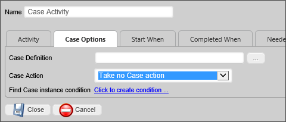

|
|
Lesson Contents | In this Lesson, you will learn how to configure other Process Timeline activity types. |
While the User activity is the most commonly used type of Timeline Activity, there are a number of other activity types, each of which have configurations settings that are unique to those activity types.
The Notify activity allows you to notify users or groups during a process. Most of the Notify options are configured via the generic configuration options for an activity, except for the options in the Advanced Options tab

There are two advanced options for Notify activities.
This option defaults to true, so that the Parent activity, if any, cannot be completed until this activity is complete. This is, by far, the most common relationship between parent/child activities.
This option enables you to specify a form for a particular notify step/activity, instead of the default form. This feature is useful when configuring email templates to include information from a form instance other than the default form for that process.
The Process activity enables you to specify a process to run. This can be a Workflow or Process Timeline.

This tab enables you to configure which process the Activity starts. It also allows objects in the child process to be copied to the parent and vice versa. The objects copied can be limited to a specified group.
You may use the Object Picker to select a process that will automatically start when the Activity starts. The selected process will run as a child process of the current process, i..e., the process containing this Activity.
Checking this option will copy all objects in the child process to the current process.
You may enter the Group Name. Only objects from the specified group will be copied from the child process.
Checking this option will copy all objects in the current process to the child process.
You may enter a Group Name. Only objects from the specified group will be copied from the current process.
The Script task supports the ability to call custom script functions. For more information on the custom scripts refer to the Scripting section of this guide.

The script tab determines the script to be run. The script file is determined via an Object Picker that enables you to choose the script from the Content List. The script parameters are passed to the script as a string.
You may use the Object Picker to select a script that will automatically start when the Activity starts.
You may enter a parameter string to pass to the selected script.

In Timeline, if parent activity has "Use Form for Activity" specified with particular form, then all child activities will default to the same form. This property enables a Script Activity in a Timeline to specify a different Form to use a current form for the activity. If this property is not configured, the Process Director will check the parent Timeline activity for a configured Form and, if set, it will use that Form. Otherwise, Process Director will revert to passing the script to the current form instance that is associated with the running process.
This enables you to use a Custom Task as the activity.

Specifies the Custom Task(s) to be run for this activity. To add additional Custom Tasks, click the Add Custom Task button.
You may use the Object Picker to select a Custom Task that will automatically run when the Activity starts.
This activity type configures which Form will be the default Form within the process, and allows new forms to be attached.

You may use the Object Picker to select a form definition to be attached to the process.
Checking this option will make the selected Form the default form for this Timeline Instance.
This option will create the Form instance with a version of 1. Normally the version is set to a special value to indicate that the form has never been saved by a user which prevents it from showing up on Knowledge Views, and also applies the default data to the Form fields. Checking this option will cause the form instance to NOT use default data.
 You should not use this option unless you know that your application specifically requires this behavior.
You should not use this option unless you know that your application specifically requires this behavior.Specifies the conditions under which a new instance of the form definition is created and then attached to the process.

Assigns a group name to the added form instance.
Enables you to terminate the running Process Timeline. You may have only one End Process Activity in a Process Timeline. This activity type is not usually needed, since, once the last activity in a Process Timeline is completed, the Process Timeline completes automatically. There may, however, be conditions under which you want to end the Process Timeline, even if all activities have not been completed. In that case, you can use the End Process Activity.
You should be careful, however. If the End Process activity runs, it will instantly end the running of the Timeline instance. So you must ensure that you set Needed When conditions that you are sure will only evaluate as true when the desired conditions are met. Otherwise, the End Process activity will run at times you don't want, and cause your process to end prematurely.
Enables an activity to jump or branch to another activity in the running Process Timeline. For Process Director v3.49 and above, the use of this Activity type should be replaced, in most cases, by the use of the iteration functionality available in the Parent Activity type.

The Branch tab determines where the activity goes, as specified by the “Branch Type” dropdown. The Branch can either roll back to the activity on which it depends or start or jump to a new activity. Jumping to a new activity skips all the activities in between; they will not be started this process instance. Starting a new activity allows the steps in between to start as they normally would.
This dropdown control contains the following configuration options:
This dropdown contains a list of available Activities to which you may branch in the Timeline .
Parent activities are containers for other activities, referred to as “Children”.
You should not use any other type of activity as a Parent Activity.In Process Director versions 3.45 and higher, additional functionality has been added to Parent activity types: Results Concatenation and Looping.
By default, the result of a parent activity is set to the result of the child task whose completion resulted in the completion of the parent (this behavior is implemented in Process Director v3.45 and up. In previous versions, the parent never has a result.). Parent activities have the option of setting the result of the Parent activity to a comma-separated list of all the child results. This list will contain only the results from the immediate child activities of the Parent activity; it will not use results from any Parent activities that have been created under the top-level Parent. If the parent is configured to loop, only the results from the final iteration will be included. If the parent contains other parent activities, only the results from the direct children of that parent will be included; the results from the children of "subparents" will not be included.
Parent activities can also be used to create loops within your Process Timeline. When configured this way, the Children are referred to as a “looping segment”, i.e., a segment of your Process Timeline that iterates, or loops. A looping segment will continuously loop through the child activities until a user-defined condition, or set of conditions, is satisfied.

Selecting the Parent activity type will display a Looping tab in the designer, from which the iteration conditions can be specified.

The Looping tab contains three methods for controlling iteration through the child activities, each of which controls some aspect of how the looping segment will work by determining the conditions under which the following actions will occur:
Here’s how these three methods work.
Each time Process Director prepares to execute the looping segment, this condition will be evaluated to determine whether or not to do so. If the condition is not met, the looping segment will start again. If the condition is met, however, the loop will not be repeated, and the parent activity will be marked as complete. Any successive activities in the timeline will now be eligible to run.
The remaining methods of controlling the loop rely on conditions that are evaluated each time any child activity completes. When the relevant condition is met, execution of the loop will be interrupted.
When the specified condition is met, the current loop will be immediately stopped, and the loop will restart with the first child activity.
When the condition specified by the user is met, the current loop will be immediately stopped, and the parent activity will be marked as complete. Any successive activities in the timeline will now be eligible to run.
It is quite possible that you will need to configure all three methods. As an example, let's consider a simple approval process for a request. Suppose that each level of approval can end in one of three results: Approve, Reject, and Terminate. In this case, we might want to configure the segment as follows:
The first method for controlling the loop relies on a condition that is evaluated when your Process Timeline first runs the parent activity, and then again each time the looping segment completes (that is, each time all of the activities in the loop have completed).

Selecting this option concatenate the results of all child activities to a comma-separated list of results.
The looping functionality is normally predicated on the results of the Child Activities. Specific System Variables have been implemented to make accessing the results of the Child Activities easier.

The Iteration SysVars are available from the Timeline Activity branch of the condition builder's System Variables menu, and consist of:
Follow the links above to see a detailed explanation of each System Variable.
A parent activity that implements iteration will display a unique icon in the Process Timeline definition.

Wait tasks cause the Process Timeline to pause for a specified amount of time.

Enables you to specify the length of time to wait.

This dropdown shows items specific to this activity type.
|
Option |
Result |
|---|---|
|
Take no action |
Let the activity continue running. |
|
Cancel This Activity |
Cancel the activity and automatically advance to the next activity in the Process Timeline. |
|
Cancel the entire Timeline |
Cancel the Process Timeline. |
| Wait until at least Due Date | Kepp the activity in a wait status until at least the specified due date. |
The Case activity enables you to perform Case Management actions automatically, without requiring any user interaction.
The Case Activity has a Case Options tab where Case Management operations can be selected.

An Object Picker that enables you to select the Case definition on which the action will be conducted.
The Case Action property consists of a dropdown that identifies the action the activity will take. the available options are:
If you select the Add... or Remove... options above, you can identify the specific Case Instance to modify by using the Condition Builder to create a condition set that will return the desired case instance.